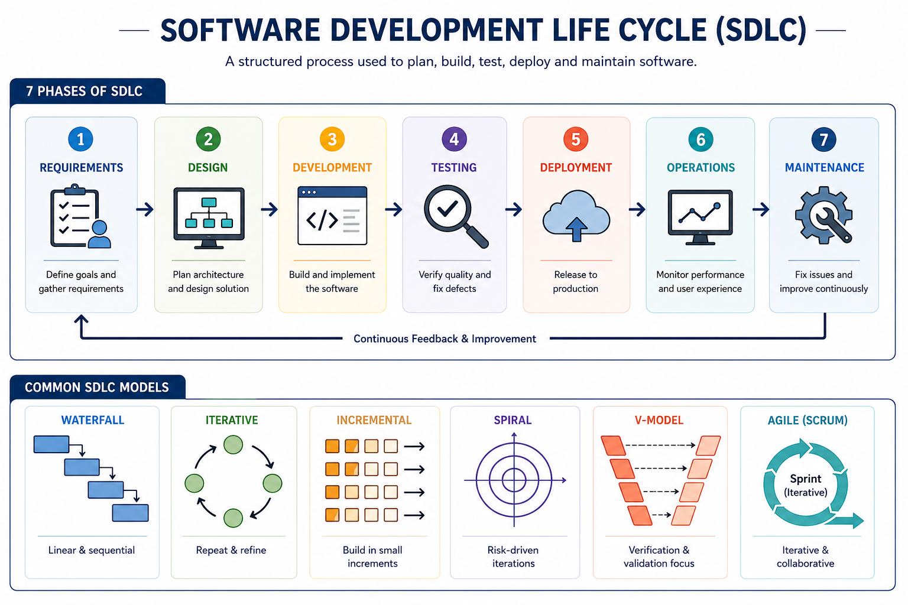

SDLC Overview
The Software Development Life Cycle (SDLC) is a process used by software engineers to design, develop, and test high-quality software.
It provides a structured approach to managing the development of software projects from inception to deployment.
SDLC has several key phases and models that guide the development process from planning to maintenance.

Key Phases of SDLC
The SDLC consists of several phases, including:
- Planning
- Analysis
- Design
- Coding
- Testing
- Deployment
- Maintenance
Each phase has specific objectives and deliverables that contribute to the overall success of the software development project.
SDLC Models
There are various SDLC models that provide different approaches to software development, including:
- Waterfall Model
- V-Model
- Iterative Model
- Incremental Model
- Spiral Model
- Agile Model
Each model has its own advantages and disadvantages, and the choice of model depends on the project requirements, team size, and other factors.